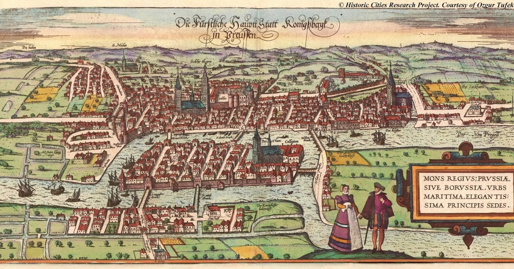
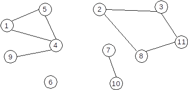

Introducere

Grafurile au apărut din necesitatea de a modela diverse situații, relații sau fenomene în
formă grafică, și au gasit o multitudine de aplicații într-o sferă foarte diversă a
activității umane: construcții și sociologie, chimie si geografie, electrotehnică si politologie.
Teoria grafurilor a luat naștere de la problema podurilor din Konigsberg, cercetată de Euler și s-
a dezvoltat ca un compartiment al matematicii clasice până când au apărut sistemele electronice de
calcul și teoria algoritmilor. Grafurile s-au dovedit a fi un instrument universal foarte flexibil pentru
rezolvarea problemelor de calcul automat, devenind un comportament al matematicii aplicate.
Teoria grafurilor a cunoscut o adevarată revoluție în momentul în care acestea au început sa fie
folosite pentru rezolvarea problemelor de optimizare. Algoritmii pentru determinarea drumului minim,
punctelor mediane, centrelor de maximizare a fluxurilor, dar și multe altele au devenit componente
importante ale cercetătorilor operaționale si a metodelor de optimizare.
Definitii
•Graf
Un graf (G) este o pereche ordonată de mulţimi (X,U), unde X este o mulţime finită şi nevidă, iar U o mulţime de perechi formate cu
elemente distincte din mulţimea X
(familie de submulţimi cu două elemente din mulţimea X).

Elementele mulţimii X se numesc noduri sau vârfuri. Mulţimea X se numeşte mulţimea nodurilor
sau mulţimea vârfurilor grafului G. Mulţimea X este de forma:
X={x1, x2, x3, ..., xn}
unde xi reprezintă nodul i al grafului G, iar n reprezintă numărul de noduri sau vârfuri.
Grade
Gradul vârfului v, d(v) este numărul de muchii, incidente acestuia. Un vârf este izolat, dacă gradul lui este 0.
Ordinul grafului (notat cu n) reprezintă numărul de noduri sau vârfuri ale grafului:
n=cardinalul mulțimii X.
Un graf poate fi reprezentat sub forma unei figuri geometrice alcătuite din:
• puncte (care corespund nodurilor sau vârfurilor) și
• linii drepte sau curbe care unesc aceste puncte (care corespund muchiilor sau arcelor).
Lanț și cicluri
Lanțul este o succesiune de vârfuri L=[x1,x2,⋯xk] cu proprietatea că oricare două vârfuri consecutive sunt adiacente.
Lanțul care conține numai vârfuri distincte, două câte două, este lanț elementar.
Lanțul care conține numai muchii distincte este lanț simplu. Dacă muchiile unui lanț nu sunt distincte se numește lanț compus.
Se numește ciclu un lanț simplu în care primul vârf este identic cu ultimul. Dacă toate vârfurile sunt distincte, mai puțin primul și ultimul, se numește
ciclu elementar.
Lungimea unui ciclu este egală cu numărul de muchii din ciclu. Lungimea minimă a unui ciclu este 3.